We investigate the neural mechanisms of social behavior in developing vertebrate brains.
We combine quantitative behavior analysis, two-photon microscopy, and neurochemical mapping to ask how a young animal’s social environment shapes the circuits that form.
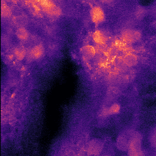
Two-photon microscopy lets us look deep inside the developing brain of a living animal and record neuronal activity in response to stimuli.
two-photon · Cellpose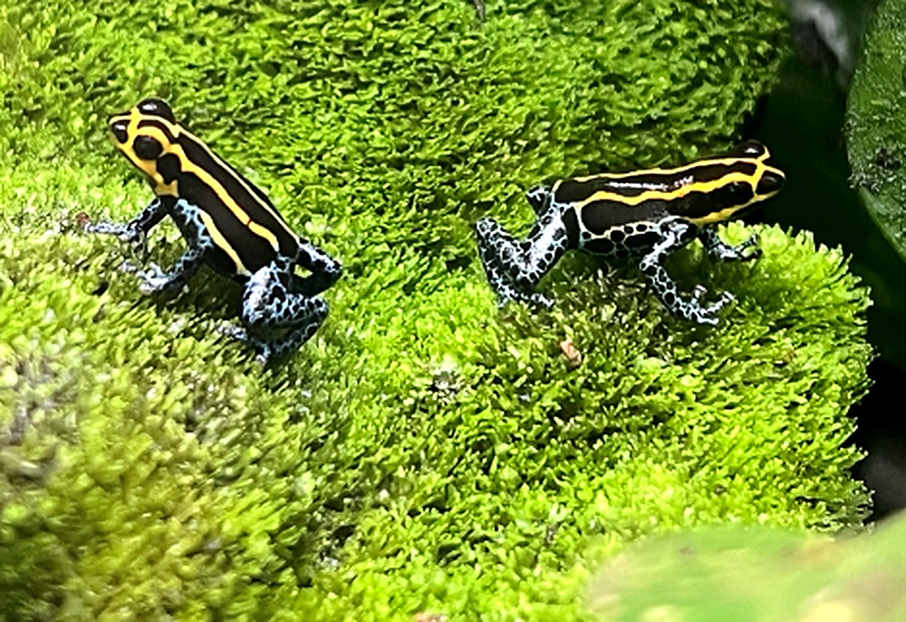
Poison frog tadpoles beg by vibrating their bodies against a parent. We score these displays frame by frame, and are building automated pose-tracking pipelines to capture their full kinematics.
BORIS · pose tracking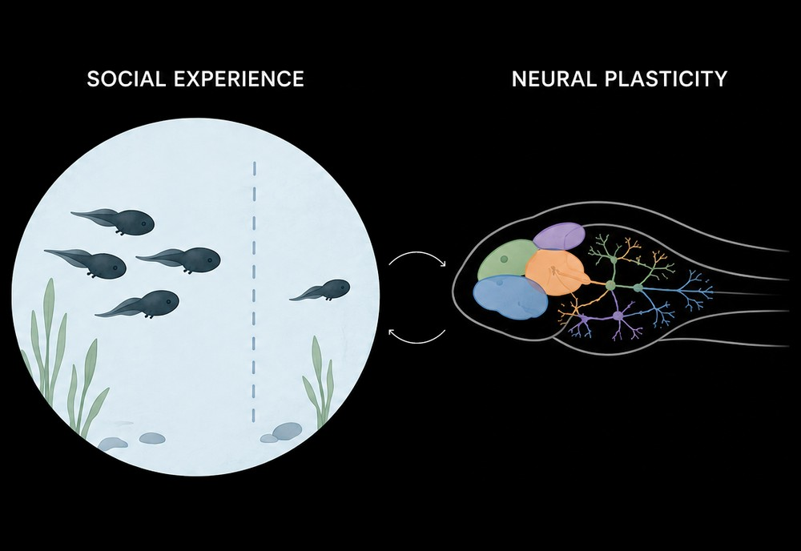
Social experiences shape neural circuits and behavior. We rear tadpoles under controlled social conditions to trace how early experience changes both.
rearing history · developmentThese two frogs let us ask the same developmental question from different angles: one built for optical access, the other for complex family life.
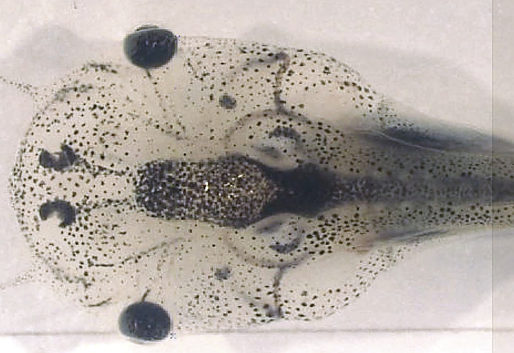
A workhorse for developmental neuroscience. Optically accessible and easy to rear in controlled social conditions, making it a useful comparison point for how sensory circuits mature.
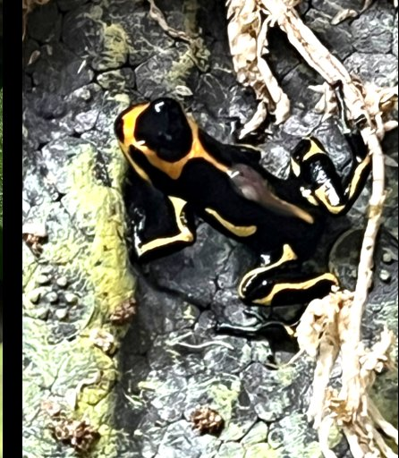
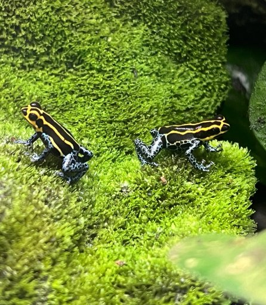
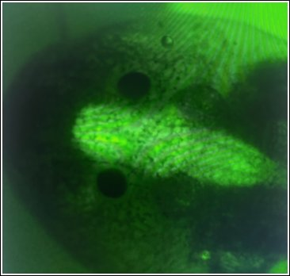
One of the few amphibians with biparental care. Mothers return to feed their tadpoles eggs, and tadpoles beg for them, a rare vertebrate system where parent and offspring communicate directly.
A collaborative group of undergraduate researchers working at the intersection of animal behavior, neuroscience, and computation.
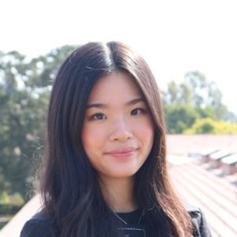
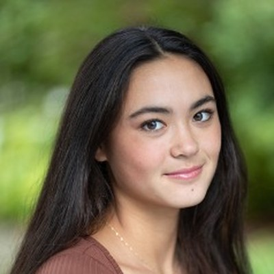
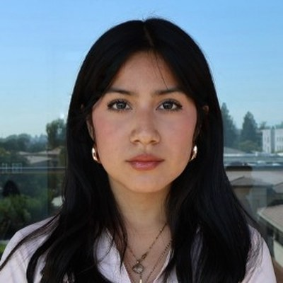
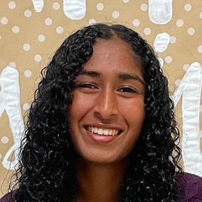
A full and current list of publications is maintained on Google Scholar.
We welcome CMC undergraduates curious about animal behavior, neuroscience, imaging, or building instruments, with no prior research experience needed. We’ll teach you what you need to know.